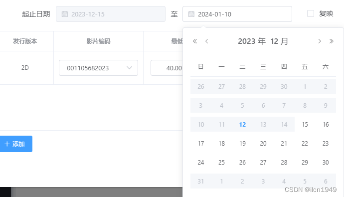
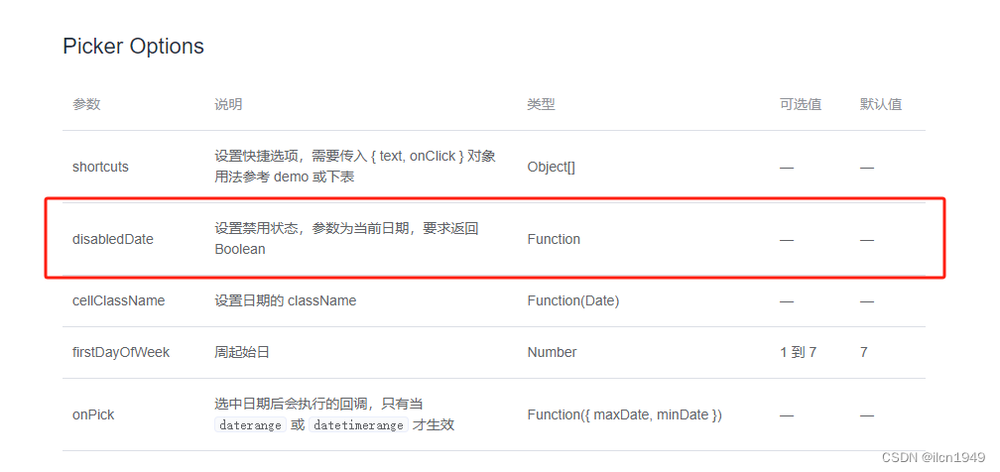
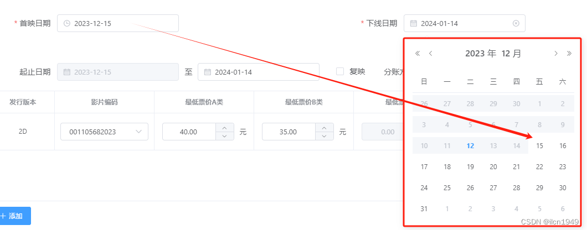

# el-date-picker时间范围设置picker-options属性使用
#【picker-options】属性使用#
首先来看一下想要实现的效果图：

#【开发需求】#
由于前端使用el-date-picker给后台传参不是用一个数组（没有用type="daterange"）。后台给的两个字段（string类型）：开始日期，结束日期。前端使用两个el-date-picker组件，通过开始日期，来限制结束日期可选择范围。比如，开始日期为2023-01-01，那么结束日期则不能选择2023-01-01之前的日期，2023-01-01之前的日期都被禁用选择了。
【图上效果】则是通过三个时间来实现的，两个时间来分别限制开始日期，结束日期，在选择第三个日期的时候，则只能在可选择范围内选择。理解不难，难得是写法。官网没有给出明确实现写法，我写了两种类型，分别都实现了。以下做详细解析。
#【官网描述】#
根据element官网（Element - The world's most popular Vue UI framework），el-date-pick中所写的属性配置项中，有一个属性对象是picker-options，表示当前时间日期选择器特有的选项，具体一些方法参数如下：

以上都是官网的描述，但是具体代码怎么写呢？
#【代码实现】#
【第一种，已知开始日期，限制结束日期的可选范围。】
【效果图】

【html部分】
<el-form-item label="首映日期" prop="movieShowDate"> <el-date-picker v-model="dataForm.movieShowDate" type="date" format="yyyy-MM-dd" value-format="yyyy-MM-dd" placeholder="选择日期时间"></el-date-picker></el-form-item> <el-form-item label="下线日期" prop="movieOfflineDate"> <el-date-picker v-model="dataForm.movieOfflineDate" type="date" format="yyyy-MM-dd" value-format="yyyy-MM-dd" placeholder="选择日期" :picker-options="{ disabledDate }"></el-date-picker></el-form-item>AI写代码
【js部分】
首映日期的就正常写就行了。在此不做展示。【注意】:picker-options="{ disabledDate }"
下线日期的js代码如下（注意此处，在methods中写，time是官网给的参数，此处不要自己删除，return必不可少，可直接粘贴到代码中看效果）：
disabledDate(time) { // -8.64e7表示可选择当天日期 return ( time.getTime() < new Date(this.dataForm.movieShowDate).getTime() - 8.64e7 );},AI写代码
【注意：补充写法】
如果页面中需要多处使用该方法，则可以这样写：在html中把【:picker-options="{ disabledDate }"】换成【:picker-options="{ disabledDate:beforeDate }"】。
js中，把【disabledDate(time)】换成【beforeDate(time)】即可实现同样效果，其他的不需要改。【解释说明：beforeDate是我自定义的方法名，你想取什么方法名都行，但是注意，要和html中的那个方法名保持一致就行啦】
【第二种，已知开始日期，结束日期，限制下线日期的可选范围。】
【效果图】
【作者截图释义】
图中有四个日期，【首映日期】，【下线日期】，【起始日期-开始日期】，【起止日期-结束日期】。根据我这边的需求是，由于【起始日期-开始日期】 和 【首映日期】必须相同，所以【起始日期-开始日期】是禁用状态（disabled），【起止日期-结束日期】在2023-12-15之前禁用，根据下线日期2023-12-30，【起止日期-结束日期】在2023-12-30之后禁用，因此，【起止日期-结束日期】的可选日期范围是2023-12-15到2023-12-30（包含12-15,12-30，包含的代码写法为【-8.64e7】表示可选择当天日期，去掉则默认为不包含。）
【起止日期的html部分】（首映日期和下线日期html代码可以参考本文中的第一种的html），具体css代码大家自己调试，在此省略。
<el-form-item label="起止日期" prop="showDate"> <el-date-picker v-model="v.movieStartDate" type="date" placeholder="开始日期" format="yyyy-MM-dd" value-format="yyyy-MM-dd" disabled> </el-date-picker> <div>至</div> <el-date-picker v-model="v.movieEndDate" type="date" placeholder="结束日期" format="yyyy-MM-dd" value-format="yyyy-MM-dd" :picker-options="pickerOptions(index)" @change="selectEndDate(v.movieEndDate, index)"> </el-date-picker></el-form-item>AI写代码
【注意写法:picker-options="pickerOptions(index)"】，为什么这么写呢？因为我的起止日期控件是写在v-for循环中的，而index是我需要用的一个参数，官网定义只给了默认的time参数，试了别的写法不大行，无意中发现这样写，可以带入自定义参数，不需要自定义参数的可以不写（index）即可。
【js部分】
data(){ return{ pickerOptions: (index) => { let that = this; return { disabledDate(time) { let isDis =time.getTime() < new Date(that.dataForm.priceList[index].movieStartDate).getTime() -8.64e7; let afterDis =time.getTime() >new Date(that.dataForm.movieOfflineDate).getTime(); return isDis || afterDis; }, }; }, }}AI写代码
【请仔细阅读，pickerOptions写在data的return中，不是写在methods中！！！否则不生效！！！】
最后，感谢阅读！欢迎一起讨论，如有更好的写法，欢迎评论留言！
文章来源：https://blog.csdn.net/ilcn1949/article/details/134940578